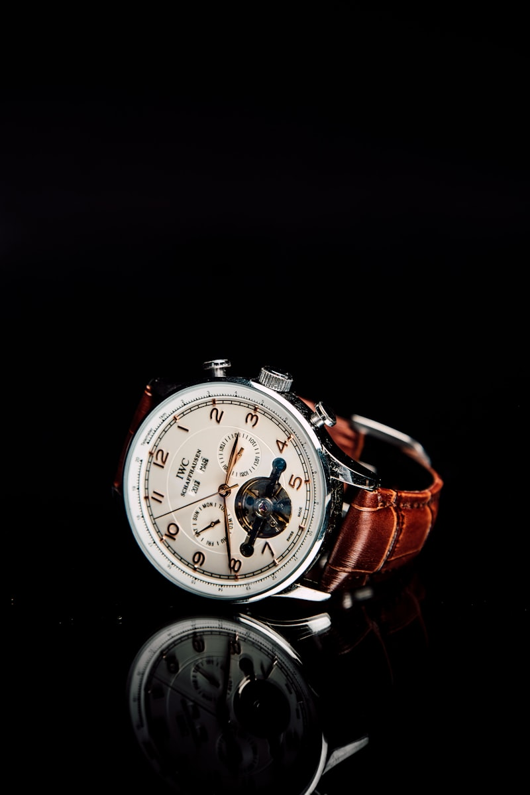

THE JOURNAL
The Horology Gazette
Our guides on tourbillon escapements, perpetual calendar memory, Rose Engine guilloché art, and movement overhauls.

Mechanics
Physics of the Tourbillon Escapement
Gravity compensation: 60-second rotational cage dynamics and balance wheel poising.
Read Article →
Complications
Perpetual Calendar Leap Year Tracking
48-month mechanical memory cams: how gears automatically skip February 29th.
Read Article →
Investment
Timepieces as Alternative Assets
Auction market dynamics: why limited complication watches outperform equity indices.
Read Article →
Craftsmanship
Art of Rose Engine Guilloché Dials
19th-century rose engine lathes: engraving Clous de Paris geometric patterns into solid silver.
Read Article →
Storage & Care
Watch Winder Settings & Storage
TPD rotation protocols: keeping perpetual calendar mainsprings energized in anti-magnetic vaults.
Read Article →
Workbench
Complete Movement Servicing
Ultrasonic cleaning, synthetic oil viscosity, and COSC chronometer calibration.
Read Article →
Capsule Vault
Building a 3-Watch Capsule Collection
The three essential timepieces: dress complication, titanium diver, and monopusher chronograph.
Read Article →